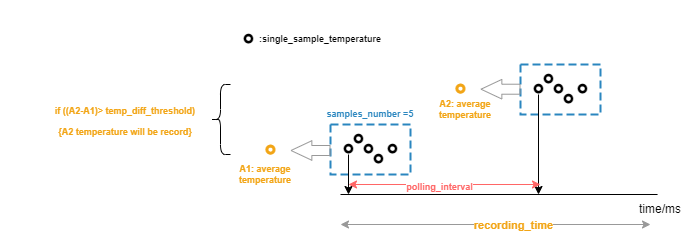

测试指南
16 May 2025
Read time: 5 minute(s)
准备测试环境
- 硬件
-
开发板
-
- 软件
-
PC 端的串口终端软件，用于 PC 和开发板进行串口通信
-
test_tsen测试程序
-
使能 test_tsen
在 Luban-Lite 根目录下执行 scons --menuconfig，进入 menuconfig
的功能配置界面，按如下选择：
Drivers options --->
Drivers examples --->
[*] Enable TSEN driver test command测试温度读取
在打开 test_tsen 的编译后，板子上可直接运行 test_tsen
命令来读取温度数据，每次连续读取 10 次温度值。
-
RTOS 环境：
test_tsen
Usage: test_tsen [options] -m, --mode_id Select and start the reading/recording mode # 依据如下 Mode ID 进行设置 -s, --sensor_id Select the sensor, default is 0 # 依据如下 Sensor ID 进行设置 -n, --samples_number Set the samples number, default is 10 # 单次监测时，读取温度的数量。会根据该数量会进行求平均处理，目的是为了避免误差 -t, --polling_interval Set the polling interval (ms), default is 10ms # 单次监测的时间间隔 -r, --recording_time Set the recording time (ms), default is 100ms # 总的目标检测时长 -d, --temp_diff_threshold Set the temperature diff threshold (0.1℃ ), default is 20(2℃ ) # 温度变化的阈值。当相邻两次监测的平均温度之差大于温度变化阈值时，会把最新点的温度进行记录 # 所设置阈值对应温度 = 该参数 * 0.1℃ -h, --help Example: test_tsen -n 5 -t 10 -d 2 -r 20 # 设置基本参数，温度记录模式参数配置示例 test_tsen -s 0 -m 1 # 选择传感器 ID 及 模式 ID test_tsen -m 2 # 在 Mode ID 中选择想要进行的模式 Mode ID: [0] read temperature # 温度读取模式 ID [1] record temperature # 进行温度记录模式 ID，超过温度差阈值的温度将会被记录到 Flash 中 [2] get recording temperature # 读取所记录的温度变化模式 ID Sensor ID: [0] sensor_cpu # CPU 附近的传感器 ID [1] sensor_gpai # GPAI 附近的传感器 IDtest_tsen -s 1 -n 10
[temp_tsen_cpu] Starting single mode # 当前进行 CPU 附近温度传感器 ADC 采样 num: 0, temp: 50.6 C, timestamp:149647 num: 1, temp: 48.3 C, timestamp:149648 num: 2, temp: 49.0 C, timestamp:149649 num: 3, temp: 49.2 C, timestamp:149650 num: 4, temp: 48.2 C, timestamp:149651 num: 5, temp: 48.4 C, timestamp:149652 num: 6, temp: 50.0 C, timestamp:149653 num: 7, temp: 50.2 C, timestamp:149654 num: 8, temp: 49.9 C, timestamp:149655 num: 9, temp: 49.1 C, timestamp:149656
- 裸机环境：
test_tsen
Compile time: May 30 2024 16:26:32 Usage: test_tsen [options] test_tsen read <sensor_id> : Select one channel in [0, 1], default is 0 # 选用传感器 ID test_tsen help : Get this help Example: test_tsen read 1 Sensor ID: [0] sensor_cpu [1] sensor_gpai
test_tsen read 0Starting the tsen_cpu sensor temperature reading # 当前进行 CPU 附近温度传感器 ADC 采样 num: 0, temp: 45.7 C (1487) # num: 读取温度次数, temp: 温度 C (ADC 采样值) num: 1, temp: 44.5 C (1497) num: 2, temp: 44.4 C (1498) num: 3, temp: 44.8 C (1495) num: 4, temp: 44.0 C (1502) num: 5, temp: 45.3 C (1490) num: 6, temp: 44.7 C (1496) num: 7, temp: 44.7 C (1496) num: 8, temp: 45.6 C (1488) num: 9, temp: 45.7 C (1487)
测试温度监测
在打开对应传感器轮询模式配置以及 test_tsen 的编译后，首先，进行设置温度监测模式的相关参数。其次，选择传感器并开启轮询监测。最后，通过
test_tsen-m2 查看所监测到的温度点。- RTOS 环境
图 1. TSensor 温度监测模式设计说明 相关参数配置test_tsen -n 5 -t 10 -d 2 -r 20
轮询监测的序数：test_tsen -s 0 -m 1
Recording way needs select polling mode
监测模式依赖于轮询，对此需在此处配置 polling mode，具体配置方法可见 menuconfig。以下输出结果表示轮询监测的总次数为 2：
=========[1]========= [0] temp: 42.7 C, timestamp: 30 [1] temp: 42.7 C, timestamp: 30 [2] temp: 42.2 C, timestamp: 30 [3] temp: 42.1 C, timestamp: 30 [4] temp: 42.3 C, timestamp: 30 =========[2]========= [5] temp: 42.5 C, timestamp: 30 [6] temp: 42.1 C, timestamp: 30 [7] temp: 42.0 C, timestamp: 30 [8] temp: 42.0 C, timestamp: 30 [9] temp: 41.9 C, timestamp: 30 total record count:2
监测到温差超过所设置的温度变化阈值的温度：test_tsen -m 2 [0] temp: 42.4 C [1] temp: 42.1 C